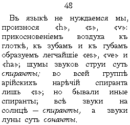
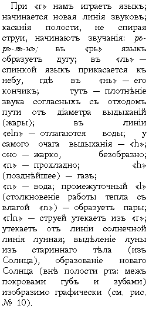

Glossolalia (Section 48)
GLOSSOLALIA

We have no need of the tongue to pronounce "h," "s," "v": with a touch of air to the throat, to the teeth and to the lips we form a delicate/light "s," "v" and "h"; the noises of the sounds of the stream are the spirants; in the whole group of the Aryan dialects "s" is the only spirant; but there were other spirants; all sounds on the sun are -- spirants; and the sounds of the luna are -- sonants.

The tongue plays to us for an "r"; a new line of sounds begins; touchings of the cavity, not pressing on the stream, begin the sounds: r-r'-l'-n'; for soft "r" the tongue forms an arc; for the soft "l" -- the back of the tongue touches the palate, whereas for a soft "n" it is the tip of the tongue; here is -- the consolidation of the sound of the consonants with the departure of the path from the diameter of exhalation (of heat); along the line "eln" -- the waters are deposited; at the very hearth of exhalation there is -- an "h"; it is -- hot, formless; "n" is -- cool; "h" (the latter one ) is -- a gas; "n" is -- water; the intermediary "l" (the conflict of the labor of the warmth with the moist "n") -- forms steam; "rln" -- flows away in a stream from "r"; the lunar line flows away from the solar line; the separation of the luna from the ancient body (from the Sun), the formation of a new Sun (outside the orifice of the mouth; between the covers of the lips and the teeth) is depicted graphically (Cf. Illus. 10).